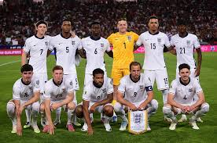

Association Football

There are conflicting explanations of the origin of the word "football". It is widely assumed that the word "football" (or the phrase "foot ball") refers to the action of the foot kicking a ball. There is an alternative explanation, which is that football originally referred to a variety of games in medieval Europe that were played on foot. Association football is played in accordance with the Laws of the Game, a set of rules that has been in effect since 1863 and maintained by the IFAB since 1886. The game is played with a football that is 68-70 cm (27-28 in) in circumference. When the ball is in play, the players mainly use their feet, but may also use any other part of their body, except for their hands or arms, to control, strike, or pass the ball; the head, chest, and thighs are commonly used. Only the goalkeepers may use their hands and arms, but only within their own penalty area. Depending on the format of the competition, an equal number of goals scored may result in a draw being declared with 1 point awarded to each team, or the game may go into extra time or a penalty shoot-out. Visit Website for more details...